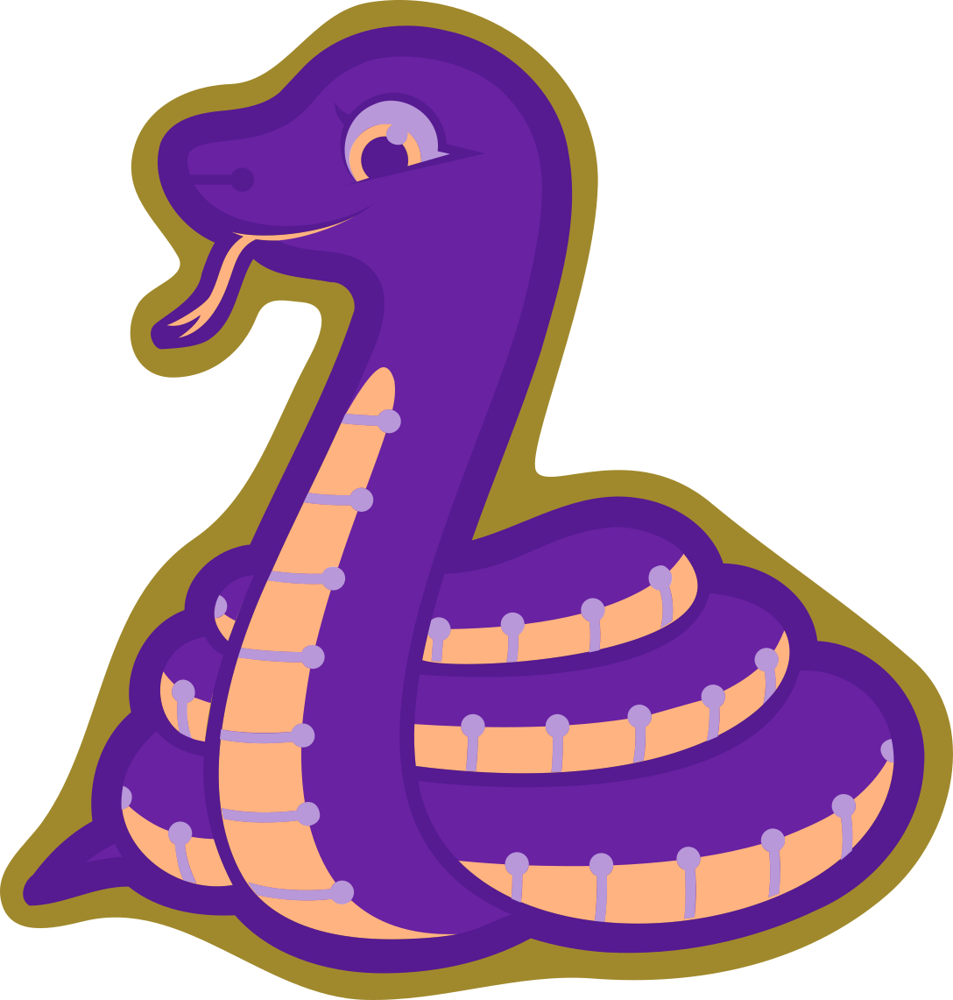

Third Version¶
Published on 2017-12-22 in Blinka.
I finally got my hands on a vector version of the Blinka logo, and I immediately started working on the third version of the board. Of course the file was a horrible mess of spurious nodes, but after a couple of hours of cleaning it up, and some simple operations on the shapes, I have the basic layers ready:
This time the board outline is much simplified, to avoid problems with cutting it out. I realized that there is a fifth color that I didn’t use — the raw FR4 board — so I used it here. I also made it much bigger this time — so that it fits in the 5×5cm square. That should give me enough space to fit the SAMD21, the coin cell battery, the power switch, and as many pads as I can route conveniently on a single side. I’m also considering just slapping a Trinket M0 on it — we will see.